CODING AGENTS AS PIXEL WORLD MODELS
traex/DeepSeek-V4.1-Flash · material_0028
点击播放 · 原生 RGB 像素
逐轮保存的候选
回放视频、检查图与代码变化。
每份候选均可单独播放。实际图片检查记录在下方工具轨迹中。
候选 01播放与检查图
点击播放 · 原生 RGB 像素

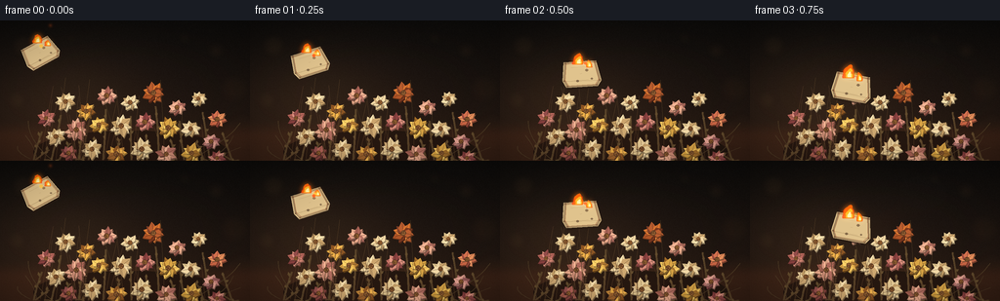
展开代码变化
--- 上一保存版本
+++ 本次保存版本
@@ -0,0 +1,523 @@
+from __future__ import annotations
+
+import math
+import random
+from pathlib import Path
+
+import numpy as np
+from PIL import Image, ImageDraw, ImageFilter
+
+import artifact_io
+
+
+W, H, N, FPS = 256, 144, 20, 4.0
+S = 3
+WX, HX = W * S, H * S
+CASE = Path(__file__).resolve().parent
+RNG = random.Random(280119)
+
+
+def s(v: float) -> int:
+ return int(round(v * S))
+
+
+def rgba(color: tuple[int, int, int], alpha: int = 255) -> tuple[int, int, int, int]:
+ return color[0], color[1], color[2], alpha
+
+
+def mix(a: tuple[int, int, int], b: tuple[int, int, int], t: float) -> tuple[int, int, int]:
+ t = max(0.0, min(1.0, t))
+ return tuple(int(a[i] * (1.0 - t) + b[i] * t) for i in range(3))
+
+
+def smoothstep(a: float, b: float, x):
+ if a == b:
+ return (x >= b).astype(np.float32) if isinstance(x, np.ndarray) else float(x >= b)
+ q = np.clip((x - a) / (b - a), 0.0, 1.0)
+ return q * q * (3.0 - 2.0 * q)
+
+
+def bezier(p0, p1, p2, steps=26):
+ points = []
+ for i in range(steps + 1):
+ t = i / steps
+ x = (1 - t) ** 2 * p0[0] + 2 * (1 - t) * t * p1[0] + t * t * p2[0]
+ y = (1 - t) ** 2 * p0[1] + 2 * (1 - t) * t * p1[1] + t * t * p2[1]
+ points.append((x, y))
+ return points
+
+
+def make_background() -> Image.Image:
+ y = np.linspace(0.0, 1.0, HX, dtype=np.float32)[:, None]
+ x = np.linspace(0.0, 1.0, WX, dtype=np.float32)[None, :]
+ top = np.array([13, 12, 11], np.float32)
+ mid = np.array([31, 22, 17], np.float32)
+ low = np.array([48, 29, 20], np.float32)
+ t = np.clip(y / 0.72, 0, 1)
+ img = top[None, None, :] * (1 - t[..., None]) + mid[None, None, :] * t[..., None]
+ img = np.broadcast_to(img, (HX, WX, 3)).copy()
+ floor = smoothstep(0.70, 0.84, y)
+ img = img * (1 - floor[..., None]) + low[None, None, :] * floor[..., None]
+
+ # A soft pool of side light keeps the dark background dimensional.
+ glow = np.exp(-(((x - 0.28) / 0.33) ** 2 + ((y - 0.57) / 0.38) ** 2))
+ img += glow[..., None] * np.array([18, 12, 7], np.float32)
+ floor_glow = np.exp(-(((x - 0.50) / 0.48) ** 2 + ((y - 1.02) / 0.24) ** 2))
+ img += floor_glow[..., None] * np.array([15, 9, 5], np.float32)
+
+ grain = np.random.default_rng(12).normal(0, 2.0, (HX, WX, 1))
+ img = np.clip(img + grain, 0, 255).astype(np.uint8)
+ im = Image.fromarray(img, "RGB")
+
+ bokeh = Image.new("RGBA", (WX, HX), (0, 0, 0, 0))
+ bd = ImageDraw.Draw(bokeh)
+ bokeh_data = [
+ (24, 26, 11, (129, 93, 54, 20)),
+ (221, 31, 8, (141, 100, 60, 17)),
+ (240, 70, 14, (105, 67, 37, 15)),
+ (17, 82, 9, (153, 112, 70, 14)),
+ (189, 18, 5, (167, 119, 70, 16)),
+ (73, 19, 4, (158, 113, 72, 13)),
+ (246, 115, 18, (134, 82, 45, 11)),
+ ]
+ for bx, by, br, col in bokeh_data:
+ bd.ellipse((s(bx - br), s(by - br), s(bx + br), s(by + br)), fill=col)
+ bokeh = bokeh.filter(ImageFilter.GaussianBlur(s(3.8)))
+ im = Image.alpha_composite(im.convert("RGBA"), bokeh).convert("RGB")
+ return im
+
+
+FLOWERS = [
+ # x, y, radius, petals, stem dx, stem dy, palette, tilt, ignition bias
+ (47, 100, 9.5, 8, -13, 47, "rose", -0.20, 1.55),
+ (67, 83, 11.0, 9, -15, 60, "cream", 0.10, 1.32),
+ (88, 93, 10.0, 8, -8, 50, "amber", -0.16, 1.18),
+ (109, 77, 11.5, 9, -4, 66, "blush", 0.15, 1.04),
+ (133, 84, 10.0, 8, 1, 59, "cream", -0.08, 0.96),
+ (157, 74, 12.0, 10, 5, 69, "rust", 0.20, 0.90),
+ (181, 89, 10.5, 8, 7, 54, "blush", -0.18, 0.72),
+ (203, 80, 9.5, 9, 11, 63, "cream", 0.08, 0.62),
+ (222, 101, 10.0, 8, 15, 42, "coral", -0.12, 0.54),
+ (57, 119, 10.5, 9, -21, 30, "cream", 0.22, 1.30),
+ (78, 112, 12.5, 10, -18, 37, "blush", -0.18, 1.05),
+ (101, 107, 11.0, 8, -11, 38, "gold", 0.10, 0.84),
+ (124, 108, 12.0, 9, -5, 35, "cream", -0.20, 0.62),
+ (148, 104, 11.5, 9, 2, 39, "rose", 0.16, 0.47),
+ (172, 110, 12.5, 10, 8, 34, "gold", -0.12, 0.35),
+ (195, 111, 11.0, 8, 13, 35, "cream", 0.18, 0.27),
+ (216, 124, 10.5, 8, 20, 23, "pink", -0.10, 0.21),
+ (70, 136, 10.0, 8, -25, 12, "darkrose", 0.16, 1.20),
+ (94, 132, 11.0, 9, -17, 17, "cream", -0.12, 0.90),
+ (119, 137, 11.5, 9, -8, 10, "amber", 0.18, 0.65),
+ (145, 132, 12.0, 10, 1, 14, "cream", -0.16, 0.45),
+ (170, 137, 11.0, 8, 8, 9, "blush", 0.10, 0.30),
+ (196, 136, 11.0, 9, 16, 10, "gold", -0.15, 0.22),
+ (222, 141, 9.0, 8, 22, 5, "rose", 0.12, 0.16),
+]
+
+
+PALETTES = {
+ "cream": [(226, 204, 153), (240, 220, 173), (196, 163, 111)],
+ "blush": [(206, 145, 125), (231, 174, 146), (168, 103, 91)],
+ "rose": [(184, 105, 96), (215, 143, 128), (139, 70, 70)],
+ "darkrose": [(139, 73, 70), (174, 100, 88), (103, 50, 50)],
+ "amber": [(202, 143, 62), (234, 178, 77), (145, 91, 40)],
+ "gold": [(215, 168, 74), (244, 201, 99), (160, 111, 45)],
+ "rust": [(174, 88, 45), (213, 119, 53), (119, 57, 34)],
+ "coral": [(209, 111, 79), (238, 151, 101), (151, 72, 60)],
+ "pink": [(191, 127, 122), (222, 161, 148), (143, 83, 84)],
+}
+
+
+def petal_polygon(cx, cy, angle, length, width, curl=0.0):
+ ux, uy = math.cos(angle), math.sin(angle)
+ nx, ny = -uy, ux
+ base_w = width * 0.42
+ shoulder_w = width
+ shoulder = length * 0.45
+ bend = curl * length
+ pts = [
+ (cx + nx * base_w, cy + ny * base_w),
+ (cx + ux * shoulder + nx * shoulder_w + nx * bend, cy + uy * shoulder + ny * shoulder_w + ny * bend),
+ (cx + ux * length + nx * bend * 1.4, cy + uy * length + ny * bend * 1.4),
+ (cx + ux * shoulder - nx * shoulder_w + nx * bend, cy + uy * shoulder - ny * shoulder_w + ny * bend),
+ (cx - nx * base_w, cy - ny * base_w),
+ ]
+ return [(s(x), s(y)) for x, y in pts]
+
+
+def draw_stem(draw: ImageDraw.ImageDraw, flower):
+ x, y, _, _, dx, dy, _, tilt, _ = flower
+ p0 = (x + dx * 0.35, y + 14)
+ p1 = (x + dx * 0.58 + tilt * 7, y + dy * 0.52)
+ p2 = (x + dx, min(143, y + dy))
+ pts = [(s(px), s(py)) for px, py in bezier(p0, p1, p2, 22)]
+ draw.line(pts, fill=(86, 67, 42, 255), width=max(1, s(1.25)))
+ draw.line([(px + S, py) for px, py in pts], fill=(112, 88, 54, 130), width=max(1, s(0.55)))
+
+ # Sparse dry leaves, placed along the upper half of each stem.
+ for side, pos, leaf_len in [(-1, 0.25, 5.0), (1, 0.47, 4.2), (-1, 0.67, 3.8)]:
+ i = min(len(pts) - 2, max(1, int(pos * (len(pts) - 1))))
+ bx, by = pts[i]
+ a = -1.05 + tilt + side * 0.55
+ tip = (bx + math.cos(a) * s(leaf_len), by + math.sin(a) * s(leaf_len))
+ nx, ny = -math.sin(a), math.cos(a)
+ poly = [
+ (bx, by),
+ (bx + math.cos(a) * s(leaf_len * 0.5) + nx * s(1.3), by + math.sin(a) * s(leaf_len * 0.5) + ny * s(1.3)),
+ tip,
+ (bx + math.cos(a) * s(leaf_len * 0.5) - nx * s(1.2), by + math.sin(a) * s(leaf_len * 0.5) - ny * s(1.2)),
+ ]
+ draw.polygon(poly, fill=(101, 81, 49, 220))
+
+
+def draw_flower(draw: ImageDraw.ImageDraw, flower):
+ x, y, r, petals, _, _, palette, tilt, _ = flower
+ cols = PALETTES[palette]
+ phase = (x * 0.71 + y * 0.37) % (math.tau)
+ petal_len = r * (1.0 + 0.08 * math.sin(phase))
+ for j in range(petals):
+ angle = phase + math.tau * j / petals + tilt
+ length = petal_len * (0.88 + 0.10 * math.cos(phase * 2 + j * 1.7))
+ width = r * (0.31 + 0.05 * math.sin(j * 2.3 + phase))
+ curl = 0.06 * math.sin(j * 1.9 + phase)
+ base_col = cols[j % 3]
+ shade = int(8 * math.sin(j * 1.4 + phase))
+ color = tuple(max(0, min(255, c + shade)) for c in base_col)
+ # A dark petal underneath makes the papery layers read at small size.
+ under = tuple(max(0, int(c * 0.62)) for c in color)
+ poly = petal_polygon(x + 0.8, y + 1.2, angle, length, width, curl)
+ draw.polygon(poly, fill=rgba(under, 230))
+ poly = petal_polygon(x, y, angle, length, width, curl)
+ draw.polygon(poly, fill=rgba(color, 250))
+ vein_end = (
+ x + math.cos(angle) * length * 0.83,
+ y + math.sin(angle) * length * 0.83,
+ )
+ draw.line(
+ [(s(x), s(y)), (s(vein_end[0]), s(vein_end[1]))],
+ fill=rgba(tuple(max(0, int(c * 0.78)) for c in color), 135),
+ width=max(1, s(0.35)),
+ )
+
+ # Dried centers have uneven, seed-like texture.
+ draw.ellipse((s(x - r * 0.22), s(y - r * 0.22), s(x + r * 0.22), s(y + r * 0.22)),
+ fill=(91, 58, 35, 255))
+ for k in range(5):
+ a = phase + k * 1.73
+ px = x + math.cos(a) * r * 0.12
+ py = y + math.sin(a) * r * 0.12
+ draw.ellipse((s(px - 0.55), s(py - 0.55), s(px + 0.55), s(py + 0.55)),
+ fill=(153, 103, 53, 230))
+
+
+def make_base() -> Image.Image:
+ bg = make_background().convert("RGBA")
+ layer = Image.new("RGBA", (WX, HX), (0, 0, 0, 0))
+ d = ImageDraw.Draw(layer)
+
+ # Table shadow and a few loose dried sprigs frame the pile.
+ d.ellipse((s(34), s(113), s(233), s(157)), fill=(10, 8, 7, 120))
+ for x0, x1, y1, bend in [
+ (31, 18, 129, -8), (38, 26, 118, 4), (221, 246, 130, -4),
+ (216, 239, 118, 7), (196, 246, 105, 12), (52, 29, 103, -12),
+ ]:
+ pts = bezier((x0, 142), ((x0 + x1) / 2 + bend, (142 + y1) / 2), (x1, y1), 18)
+ d.line([(s(px), s(py)) for px, py in pts], fill=(82, 66, 42, 205), width=s(0.75))
+
+ ordered = sorted(FLOWERS, key=lambda f: f[1])
+ for f in ordered:
+ draw_stem(d, f)
+ for f in ordered:
+ draw_flower(d, f)
+
+ # Fine dry grasses behind the blooms.
+ for k in range(28):
+ x0 = 41 + RNG.random() * 176
+ top = 58 + RNG.random() * 50
+ lean = (RNG.random() - 0.5) * 35
+ pts = bezier((x0, 142), (x0 + lean * 0.45, (142 + top) / 2), (x0 + lean, top), 16)
+ col = (111 + RNG.randrange(18), 85 + RNG.randrange(15), 52 + RNG.randrange(12), 125)
+ d.line([(s(px), s(py)) for px, py in pts], fill=col, width=max(1, s(0.42)))
+
+ im = Image.alpha_composite(bg, layer).convert("RGB")
+ return im
+
+
+BASE = make_base()
+
+
+def paper_pose(t: float):
+ # A short throw ending at the center of the dried-flower pile.
+ keys = [
+ (0.00, 42, 33, -27.0, 0.90),
+ (0.25, 62, 43, -16.0, 0.93),
+ (0.50, 84, 55, -2.0, 0.97),
+ (0.75, 105, 69, 12.0, 1.00),
+ (1.00, 123, 84, 23.0, 1.02),
+ (1.25, 132, 98, 6.0, 1.00),
+ (1.50, 132, 103, -12.0, 0.98),
+ (5.00, 132, 103, -12.0, 0.98),
+ ]
+ for a, b in zip(keys[:-1], keys[1:]):
+ if a[0] <= t <= b[0]:
+ q = (t - a[0]) / (b[0] - a[0])
+ q = q * q * (3 - 2 * q)
+ return tuple(a[i] * (1 - q) + b[i] * q for i in range(1, 5))
+ return keys[-1][1:]
+
+
+def paper_vertices(cx, cy, angle_deg, scale):
+ a = math.radians(angle_deg)
+ ca, sa = math.cos(a), math.sin(a)
+ local = [(-19, -13), (15, -14), (20, 7), (16, 13), (-17, 14), (-21, 7)]
+ out = []
+ for x, y in local:
+ x *= scale
+ y *= scale
+ out.append((cx + x * ca - y * sa, cy + x * sa + y * ca))
+ return out
+
+
+def draw_paper(im: Image.Image, frame: int) -> tuple[float, float]:
+ t = frame / FPS
+ cx, cy, angle, scale = paper_pose(t)
+ verts = paper_vertices(cx, cy, angle, scale)
+ d = ImageDraw.Draw(im, "RGBA")
+
+ # Soft contact shadow after landing.
+ land = smoothstep(1.20, 1.65, t)
+ if land > 0:
+ d.ellipse((s(cx - 23), s(cy + 11), s(cx + 22), s(cy + 19)),
+ fill=(8, 5, 4, int(75 * land)))
+
+ d.polygon([(s(x + 1.4), s(y + 1.8)) for x, y in verts], fill=(37, 25, 17, 180))
+ d.polygon([(s(x), s(y)) for x, y in verts], fill=(211, 188, 140, 255))
+
+ # Fibers and a diagonal fold.
+ p0 = verts[0]
+ p2 = verts[3]
+ for q in (0.22, 0.48, 0.73):
+ a = (p0[0] * (1 - q) + p2[0] * q, p0[1] * (1 - q) + p2[1] * q)
+ b = (verts[1][0] * (1 - q) + verts[4][0] * q, verts[1][1] * (1 - q) + verts[4][1] * q)
+ d.line([(s(a[0]), s(a[1])), (s(b[0]), s(b[1]))], fill=(137, 111, 72, 70), width=max(1, s(0.32)))
+ d.line([(s(verts[5][0]), s(verts[5][1])), (s(verts[2][0]), s(verts[2][1]))],
+ fill=(130, 104, 67, 110), width=max(1, s(0.55)))
+
+ burn = smoothstep(0.0, 4.8, t)
+ char_alpha = int(90 + 155 * burn)
+ for i in range(6):
+ a = verts[i]
+ b = verts[(i + 1) % 6]
+ mx = (a[0] + b[0]) / 2
+ my = (a[1] + b[1]) / 2
+ inward = ((cx - mx) * 0.08, (cy - my) * 0.08)
+ width = 1.5 + 3.8 * burn
+ d.line([(s(a[0] + inward[0]), s(a[1] + inward[1])),
+ (s(b[0] + inward[0]), s(b[1] + inward[1]))],
+ fill=(55, 30, 18, char_alpha), width=max(1, s(width)))
+ d.line([(s(a[0] + inward[0] * 1.8), s(a[1] + inward[1] * 1.8)),
+ (s(b[0] + inward[0] * 1.8), s(b[1] + inward[1] * 1.8))],
+ fill=(126, 55, 22, int(95 + 100 * burn)), width=max(1, s(0.65)))
+
+ # Holes grow inward from the leading edge.
+ for hole_idx, (lx, ly, rr) in enumerate([(5, -4, 3.0), (10, 5, 2.0), (-5, 7, 2.6)]):
+ a = math.radians(angle)
+ hx = cx + lx * scale * math.cos(a) - ly * scale * math.sin(a)
+ hy = cy + lx * scale * math.sin(a) + ly * scale * math.cos(a)
+ size = rr * (0.5 + 0.65 * burn)
+ d.ellipse((s(hx - size), s(hy - size * 0.75), s(hx + size), s(hy + size * 0.75)),
+ fill=(45, 25, 15, int(120 + 100 * burn)))
+ if burn > 0.2:
+ d.arc((s(hx - size - 1), s(hy - size * 0.8), s(hx + size + 1), s(hy + size * 0.8)),
+ 15, 325, fill=(255, 91, 20, 170), width=max(1, s(0.45)))
+
+ return cx, cy
+
+
+def flame_polygon(cx, base_y, height, width, phase, wind):
+ left = []
+ right = []
+ steps = 18
+ for i in range(steps + 1):
+ q = i / steps
+ yy = base_y - q * height
+ taper = max(0.02, (1 - q) ** 0.52)
+ wobble = math.sin(q * 8.2 + phase) * 0.10 + math.sin(q * 16.0 - phase * 1.7) * 0.045
+ w = width * (0.78 * taper + 0.22 * math.sin(math.pi * q) ** 0.7)
+ shift = wind * q * q + math.sin(q * 5.0 + phase) * width * 0.15 * q
+ left.append((cx + shift - w * (1 + wobble), yy))
+ right.append((cx + shift + w * (1 - wobble * 0.7), yy))
+ return [(s(x), s(y)) for x, y in left + right[::-1]]
+
+
+def ignition_times():
+ impact = (132, 103)
+ times = {}
+ for idx, f in enumerate(FLOWERS):
+ dist = math.hypot(f[0] - impact[0], f[1] - impact[1])
+ times[idx] = 1.45 + dist / 92.0 + f[8] * 0.08
+ return times
+
+
+IGNITION = ignition_times()
+
+
+def flame_sources(frame: int):
+ t = frame / FPS
+ sources = []
+ for idx, f in enumerate(FLOWERS):
+ age = t - IGNITION[idx]
+ if age <= 0:
+ continue
+ grow = smoothstep(0.0, 1.15, age)
+ sustain = 0.78 + 0.22 * smoothstep(1.1, 4.6, t)
+ h = (6.0 + 17.0 * grow) * sustain
+ w = 3.2 + 5.8 * grow
+ sources.append((f[0], f[1] + 1.5, h, w, idx * 1.91 + frame * 0.72, 1.8 + idx % 3))
+
+ # Flames from the paper itself, strongest just after impact.
+ px, py, _, _ = paper_pose(t)
+ paper_growth = smoothstep(0.05, 1.25, t) * (1.0 - 0.20 * smoothstep(3.5, 5.0, t))
+ sources.append((px - 4, py - 10, 9 + 8 * paper_growth, 5.0 + 2.0 * paper_growth, frame * 0.83, 1.1))
+ sources.append((px + 7, py - 7, 6 + 5 * paper_growth, 3.2, frame * 1.17 + 2.0, -0.7))
+ return sources
+
+
+def draw_fire(im: Image.Image, frame: int) -> None:
+ sources = flame_sources(frame)
+ if not sources:
+ return
+ fire = Image.new("RGBA", (WX, HX), (0, 0, 0, 0))
+ fd = ImageDraw.Draw(fire)
+ for cx, by, h, w, phase, wind in sources:
+ for sub in (-0.38, 0.34):
+ hh = h * (0.78 + 0.08 * math.sin(phase + sub * 5))
+ ww = w * (0.72 + 0.10 * math.cos(phase + sub * 4))
+ fd.polygon(flame_polygon(cx + sub * w, by, hh, ww, phase + sub * 3, wind),
+ fill=(255, 53, 7, 175))
+ fd.polygon(flame_polygon(cx, by, h, w, phase, wind), fill=(255, 103, 9, 225))
+ fd.polygon(flame_polygon(cx + 0.35, by - 0.6, h * 0.68, w * 0.67, phase + 1.2, wind * 0.8),
+ fill=(255, 187, 39, 238))
+ fd.polygon(flame_polygon(cx + 0.55, by - 1.1, h * 0.39, w * 0.35, phase + 2.0, wind * 0.55),
+ fill=(255, 243, 172, 245))
+
+ glow = fire.filter(ImageFilter.GaussianBlur(s(2.7)))
+ glow_np = np.asarray(glow.convert("RGB"), dtype=np.float32)
+ base_np = np.asarray(im, dtype=np.float32)
+ # Screen the warm halo into the scene so nearby petals are lit by the fire.
+ base_np = 255.0 - (255.0 - base_np) * (255.0 - glow_np * 0.72) / 255.0
+ im.paste(Image.fromarray(np.clip(base_np, 0, 255).astype(np.uint8), "RGB"))
+ im.paste(fire, (0, 0), fire)
+
+
+def draw_char(im: Image.Image, frame: int) -> None:
+ t = frame / FPS
+ layer = Image.new("RGBA", (WX, HX), (0, 0, 0, 0))
+ d = ImageDraw.Draw(layer)
+ for idx, f in enumerate(FLOWERS):
+ age = t - IGNITION[idx]
+ if age <= 0:
+ continue
+ amount = smoothstep(0.0, 0.85, age)
+ x, y, r = f[0], f[1], f[2]
+ d.ellipse((s(x - r * 0.58), s(y - r * 0.48), s(x + r * 0.58), s(y + r * 0.52)),
+ fill=(37, 21, 13, int(145 * amount)))
+ for k in range(4):
+ a = idx * 1.71 + k * 1.47
+ px = x + math.cos(a) * r * 0.48
+ py = y + math.sin(a) * r * 0.38
+ rr = r * (0.12 + 0.05 * (k % 2))
+ d.ellipse((s(px - rr), s(py - rr), s(px + rr), s(py + rr)),
+ fill=(20, 13, 10, int(150 * amount)))
+ im.paste(layer, (0, 0), layer)
+
+
+def draw_smoke(im: Image.Image, frame: int) -> None:
+ t = frame / FPS
+ if t < 0.35:
+ return
+ smoke = Image.new("RGBA", (WX, HX), (0, 0, 0, 0))
+ d = ImageDraw.Draw(smoke)
+ strength = smoothstep(0.3, 2.0, t) * (0.55 + 0.45 * smoothstep(2.0, 5.0, t))
+ for k in range(8):
+ phase = k * 1.37
+ rise = (t * 18.0 + k * 8.5) % 91
+ x = 118 + k * 10.0 + math.sin(phase + t * 1.6) * (7 + k * 0.7)
+ y = 91 - rise + k * 1.8
+ rx = 13 + k * 2.4 + 3 * math.sin(phase + t)
+ ry = 8 + k * 1.5
+ alpha = int((20 + k * 3) * strength * (0.55 + 0.45 * math.sin(phase + t * 2) ** 2))
+ d.ellipse((s(x - rx), s(y - ry), s(x + rx), s(y + ry)),
+ fill=(99, 84, 73, max(0, alpha)))
+ smoke = smoke.filter(ImageFilter.GaussianBlur(s(4.4)))
+ im.paste(smoke, (0, 0), smoke)
+
+
+def draw_sparks(im: Image.Image, frame: int) -> None:
+ t = frame / FPS
+ layer = Image.new("RGBA", (WX, HX), (0, 0, 0, 0))
+ d = ImageDraw.Draw(layer)
+ px, py, _, _ = paper_pose(t)
+ sources = [(px, py - 7)] if t < 1.55 else []
+ for idx, f in enumerate(FLOWERS):
+ if t > IGNITION[idx] + 0.15:
+ sources.append((f[0], f[1] - 5))
+ for k, (sx, sy) in enumerate(sources):
+ for j in range(2):
+ seed = k * 17 + j * 11
+ life = (t * (0.54 + 0.06 * (j + 1)) + (seed % 13) / 13.0) % 1.0
+ x = sx + math.sin(seed * 1.2 + t * 4.0) * (3 + life * 7) + life * 5
+ y = sy - life * (16 + (seed % 7) * 2.2)
+ alpha = int(230 * (1 - life) ** 1.4)
+ rr = 0.65 + (1 - life) * 0.9
+ col = (255, 201, 76, alpha) if j == 0 else (255, 93, 25, alpha)
+ d.ellipse((s(x - rr), s(y - rr), s(x + rr), s(y + rr)), fill=col)
+ if life < 0.36:
+ d.line([(s(x), s(y)), (s(x + 1.2), s(y + 2.2))], fill=col, width=max(1, s(0.35)))
+ glow = layer.filter(ImageFilter.GaussianBlur(s(1.25)))
+ glow_np = np.asarray(glow.convert("RGB"), dtype=np.float32)
+ base_np = np.asarray(im, dtype=np.float32)
+ base_np = 255.0 - (255.0 - base_np) * (255.0 - glow_np * 0.85) / 255.0
+ im.paste(Image.fromarray(np.clip(base_np, 0, 255).astype(np.uint8), "RGB"))
+ im.paste(layer, (0, 0), layer)
+
+
+def final_grade(im: Image.Image, frame: int) -> Image.Image:
+ arr = np.asarray(im, dtype=np.float32)
+ yy, xx = np.mgrid[0:HX, 0:WX]
+ nx = (xx / (WX - 1) - 0.5) * 2
+ ny = (yy / (HX - 1) - 0.5) * 2
+ vignette = np.clip(1.08 - 0.20 * (nx * nx * 0.68 + ny * ny), 0.72, 1.04)
+ arr *= vignette[..., None]
+ # Gentle warm-black grade, preserving bright flame cores.
+ arr[..., 0] *= 1.025
+ arr[..., 2] *= 0.975
+ arr = np.clip(arr, 0, 255).astype(np.uint8)
+ out = Image.fromarray(arr, "RGB").resize((W, H), Image.Resampling.LANCZOS)
+ return out
+
+
+def render(frame: int) -> Image.Image:
+ im = BASE.copy()
+ draw_char(im, frame)
+ draw_smoke(im, frame)
+ draw_paper(im, frame)
+ draw_fire(im, frame)
+ draw_sparks(im, frame)
+ return final_grade(im, frame)
+
+
+def main():
+ frames = []
+ for i in range(N):
+ frame = np.asarray(render(i), dtype=np.uint8)
+ frames.append(frame)
+ print(f"rendered {i + 1:02d}/{N}")
+ frames = np.stack(frames)
+ artifact_io.save(frames, CASE)
+ print("saved", frames.shape, "to", CASE)
+
+
+if __name__ == "__main__":
+ main()
候选 02播放与检查图
点击播放 · 原生 RGB 像素
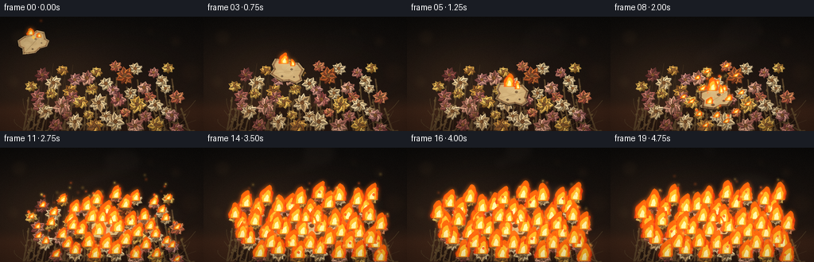
展开代码变化
--- 上一保存版本
+++ 本次保存版本
@@ -113,6 +113,30 @@
(170, 137, 11.0, 8, 8, 9, "blush", 0.10, 0.30),
(196, 136, 11.0, 9, 16, 10, "gold", -0.15, 0.22),
(222, 141, 9.0, 8, 22, 5, "rose", 0.12, 0.16),
+ # A second, lower ring fills gaps and gives the fire a broader bed to catch.
+ (39, 87, 8.5, 8, -10, 56, "gold", 0.16, 1.48),
+ (53, 73, 9.5, 9, -12, 69, "darkrose", -0.14, 1.42),
+ (78, 67, 8.5, 8, -12, 75, "amber", 0.12, 1.22),
+ (94, 79, 9.0, 8, -7, 62, "pink", -0.16, 1.08),
+ (121, 69, 8.5, 8, -2, 74, "gold", 0.18, 0.97),
+ (145, 62, 8.0, 8, 3, 80, "coral", -0.12, 0.86),
+ (170, 65, 9.0, 8, 7, 77, "cream", 0.15, 0.74),
+ (193, 70, 8.0, 8, 10, 73, "rose", -0.18, 0.65),
+ (211, 64, 8.5, 8, 13, 78, "gold", 0.12, 0.59),
+ (64, 96, 8.5, 8, -19, 46, "gold", -0.10, 1.17),
+ (91, 101, 8.5, 8, -14, 42, "rose", 0.15, 0.96),
+ (115, 91, 8.0, 8, -6, 52, "gold", -0.16, 0.86),
+ (142, 92, 8.0, 8, 0, 51, "pink", 0.14, 0.70),
+ (164, 96, 8.5, 8, 5, 47, "cream", -0.13, 0.58),
+ (188, 101, 8.0, 8, 10, 42, "coral", 0.17, 0.48),
+ (208, 90, 8.0, 8, 13, 53, "cream", -0.15, 0.48),
+ (48, 112, 8.0, 8, -18, 31, "rose", 0.14, 1.30),
+ (84, 124, 8.0, 8, -21, 20, "darkrose", -0.13, 1.04),
+ (111, 123, 8.0, 8, -11, 21, "gold", 0.12, 0.78),
+ (133, 125, 8.5, 8, -4, 19, "cream", -0.15, 0.59),
+ (157, 120, 8.0, 8, 4, 24, "coral", 0.12, 0.45),
+ (183, 125, 8.5, 8, 12, 20, "rose", -0.14, 0.32),
+ (209, 119, 8.0, 8, 17, 26, "cream", 0.12, 0.30),
]
@@ -190,6 +214,11 @@
draw.polygon(poly, fill=rgba(under, 230))
poly = petal_polygon(x, y, angle, length, width, curl)
draw.polygon(poly, fill=rgba(color, 250))
+ highlight = petal_polygon(
+ x + math.cos(angle) * 0.7, y + math.sin(angle) * 0.7,
+ angle, length * 0.82, width * 0.48, curl * 0.7
+ )
+ draw.polygon(highlight, fill=rgba(mix(color, (255, 236, 190), 0.12), 115))
vein_end = (
x + math.cos(angle) * length * 0.83,
y + math.sin(angle) * length * 0.83,
@@ -270,7 +299,13 @@
def paper_vertices(cx, cy, angle_deg, scale):
a = math.radians(angle_deg)
ca, sa = math.cos(a), math.sin(a)
- local = [(-19, -13), (15, -14), (20, 7), (16, 13), (-17, 14), (-21, 7)]
+ # Torn edges, irregular corners, and a slight curl distinguish this from a card.
+ local = [
+ (-18.0, -13.0), (-7.0, -14.2), (2.5, -11.8), (12.0, -13.7),
+ (20.2, -7.0), (18.0, 2.0), (21.0, 7.0), (14.5, 12.7),
+ (5.0, 10.8), (-4.0, 13.3), (-13.0, 10.5), (-20.2, 7.4),
+ (-17.0, 0.0), (-20.5, -5.0),
+ ]
out = []
for x, y in local:
x *= scale
@@ -292,23 +327,32 @@
fill=(8, 5, 4, int(75 * land)))
d.polygon([(s(x + 1.4), s(y + 1.8)) for x, y in verts], fill=(37, 25, 17, 180))
- d.polygon([(s(x), s(y)) for x, y in verts], fill=(211, 188, 140, 255))
+ # Broad mottling, before the burn edge, makes the scrap read as fibrous paper.
+ d.polygon([(s(x), s(y)) for x, y in verts], fill=(196, 169, 119, 255))
+ center = (sum(x for x, _ in verts) / len(verts), sum(y for _, y in verts) / len(verts))
+ for k in range(7):
+ a = k * 2.33
+ lx = center[0] + math.cos(a) * 8.0
+ ly = center[1] + math.sin(a) * 5.0
+ rr = 3.0 + (k % 3) * 1.2
+ d.ellipse((s(lx - rr), s(ly - rr * 0.55), s(lx + rr), s(ly + rr * 0.55)),
+ fill=(222, 202, 157, 45))
# Fibers and a diagonal fold.
p0 = verts[0]
- p2 = verts[3]
+ p2 = verts[7]
for q in (0.22, 0.48, 0.73):
a = (p0[0] * (1 - q) + p2[0] * q, p0[1] * (1 - q) + p2[1] * q)
b = (verts[1][0] * (1 - q) + verts[4][0] * q, verts[1][1] * (1 - q) + verts[4][1] * q)
d.line([(s(a[0]), s(a[1])), (s(b[0]), s(b[1]))], fill=(137, 111, 72, 70), width=max(1, s(0.32)))
- d.line([(s(verts[5][0]), s(verts[5][1])), (s(verts[2][0]), s(verts[2][1]))],
+ d.line([(s(verts[11][0]), s(verts[11][1])), (s(verts[4][0]), s(verts[4][1]))],
fill=(130, 104, 67, 110), width=max(1, s(0.55)))
burn = smoothstep(0.0, 4.8, t)
char_alpha = int(90 + 155 * burn)
- for i in range(6):
+ for i in range(len(verts)):
a = verts[i]
- b = verts[(i + 1) % 6]
+ b = verts[(i + 1) % len(verts)]
mx = (a[0] + b[0]) / 2
my = (a[1] + b[1]) / 2
inward = ((cx - mx) * 0.08, (cy - my) * 0.08)
候选 03播放与检查图
点击播放 · 原生 RGB 像素

展开代码变化
--- 上一保存版本
+++ 本次保存版本
@@ -386,12 +386,15 @@
for i in range(steps + 1):
q = i / steps
yy = base_y - q * height
- taper = max(0.02, (1 - q) ** 0.52)
- wobble = math.sin(q * 8.2 + phase) * 0.10 + math.sin(q * 16.0 - phase * 1.7) * 0.045
- w = width * (0.78 * taper + 0.22 * math.sin(math.pi * q) ** 0.7)
- shift = wind * q * q + math.sin(q * 5.0 + phase) * width * 0.15 * q
+ taper = max(0.015, (1 - q) ** 0.68)
+ wobble = math.sin(q * 7.1 + phase) * 0.12 + math.sin(q * 17.0 - phase * 1.7) * 0.055
+ # A pinched neck and detached-looking upper lick avoid a plain triangle.
+ neck = 0.80 + 0.20 * math.sin(math.pi * q)
+ w = width * (0.82 * taper + 0.18 * math.sin(math.pi * q) ** 0.85) * neck
+ shift = wind * q * q + math.sin(q * 4.4 + phase) * width * 0.20 * q
+ shift += math.sin(q * 11.5 - phase * 0.7) * width * 0.08 * q * q
left.append((cx + shift - w * (1 + wobble), yy))
- right.append((cx + shift + w * (1 - wobble * 0.7), yy))
+ right.append((cx + shift + w * (1 - wobble * 0.72), yy))
return [(s(x), s(y)) for x, y in left + right[::-1]]
@@ -418,13 +421,14 @@
sustain = 0.78 + 0.22 * smoothstep(1.1, 4.6, t)
h = (6.0 + 17.0 * grow) * sustain
w = 3.2 + 5.8 * grow
+ h *= 0.88 + 0.12 * math.sin(frame * 1.17 + idx)
sources.append((f[0], f[1] + 1.5, h, w, idx * 1.91 + frame * 0.72, 1.8 + idx % 3))
# Flames from the paper itself, strongest just after impact.
px, py, _, _ = paper_pose(t)
paper_growth = smoothstep(0.05, 1.25, t) * (1.0 - 0.20 * smoothstep(3.5, 5.0, t))
- sources.append((px - 4, py - 10, 9 + 8 * paper_growth, 5.0 + 2.0 * paper_growth, frame * 0.83, 1.1))
- sources.append((px + 7, py - 7, 6 + 5 * paper_growth, 3.2, frame * 1.17 + 2.0, -0.7))
+ sources.append((px - 4, py - 10, 9 + 9 * paper_growth, 5.0 + 2.0 * paper_growth, frame * 0.83, 1.1))
+ sources.append((px + 7, py - 7, 6 + 6 * paper_growth, 3.2, frame * 1.17 + 2.0, -0.7))
return sources
@@ -487,7 +491,7 @@
for k in range(8):
phase = k * 1.37
rise = (t * 18.0 + k * 8.5) % 91
- x = 118 + k * 10.0 + math.sin(phase + t * 1.6) * (7 + k * 0.7)
+ x = 119 + k * 9.5 + math.sin(phase + t * 1.6) * (7 + k * 0.7) + t * 1.5
y = 91 - rise + k * 1.8
rx = 13 + k * 2.4 + 3 * math.sin(phase + t)
ry = 8 + k * 1.5
可观测工具轨迹
实际执行的命令与返回图片。
命令 1exit 0
/bin/bash -c 'cat GENERATION_RULES.md'
命令 2exit 0
/bin/bash -c 'cat prompt.txt'
命令 3exit 0
/bin/bash -c 'cat task_spec.json'
命令 4exit 0
/bin/bash -c "find . -maxdepth 2 -type f -printf '%p\\n' | sort | head -200"
命令 5exit 0
/bin/bash -c "sed -n '1,260p' artifact_io.py"
命令 6exit 0
/bin/bash -c "sed -n '1,240p' player_template.html"
命令 7exit 0
/bin/bash -c "python - <<'PY' import importlib.util for m in ['numpy','PIL','cv2','imageio','matplotlib']: print(m, bool(importlib.util.find_spec(m))) PY"
命令 8exit 1
/bin/bash -c 'python generate.py'
命令 9exit 1
/bin/bash -c 'python generate.py'
命令 10exit 0
/bin/bash -c "nl -ba generate.py | sed -n '47,78p'"
命令 11exit 0
/bin/bash -c 'python generate.py'
命令 12exit 0
/bin/bash -c "python - <<'PY'
from PIL import Image
im=Image.open('frames/10.png')
im.resize((1024,576), Image.Resampling.NEAREST).save('.tmp/frame10_4x.png')
PY"命令 13exit 0
/bin/bash -c 'mkdir -p .tmp/candidate_01 && cp -r frames pixels.npz inspection.png transition_check.png index.html .tmp/candidate_01/ && python generate.py'
命令 14exit 0
/bin/bash -c "python - <<'PY'
from PIL import Image
for i in [0,3,6,10,15,19]:
im=Image.open(f'frames/{i:02d}.png')
im.resize((1024,576), Image.Resampling.NEAREST).save(f'.tmp/revision_{i:02d}.png')
PY"命令 15exit 0
/bin/bash -c "python - <<'PY'
from pathlib import Path
import numpy as np
from PIL import Image, ImageSequence
frames=[np.array(Image.open(p).convert('RGB')) for p in sorted(Path('frames').glob('*.png'))]
print('frames',len(frames),frames[0].shape,'dtype',frames[0].dtype)
d=[np.abs(frames[i].astype(np.int16)-frames[i-1].astype(np.int16)).mean() for i in range(1,len(frames))]
print('frame delta min/mean/max',min(d),sum(d)/len(d),max(d))
print('mean luminance',np.mean(frames[0]),'->',np.mean(frames[-1]))
PY"命令 16exit 0
/bin/bash -c 'mkdir -p .tmp/candidate_02 && cp -r frames pixels.npz inspection.png transition_check.png index.html .tmp/candidate_02/ && python generate.py'
命令 17exit 0
/bin/bash -c "python - <<'PY'
from pathlib import Path
from PIL import Image
import numpy as np
p=Path('.')
frames=sorted((p/'frames').glob('*.png'))
z=np.load(p/'pixels.npz')['pixels']
print('png_count',len(frames))
print('pixels_shape',z.shape,z.dtype)
print('png_sizes',sorted({Image.open(f).size for f in frames}))
print('all_artifacts',[(n,(p/n).exists()) for n in ['generate.py','pixels.npz','inspection.png','transition_check.png','index.html','frames/00.png','frames/19.png']])
print('index_bytes',(p/'index.html').stat().st_size)
PY"视觉工具实际返回图片 1
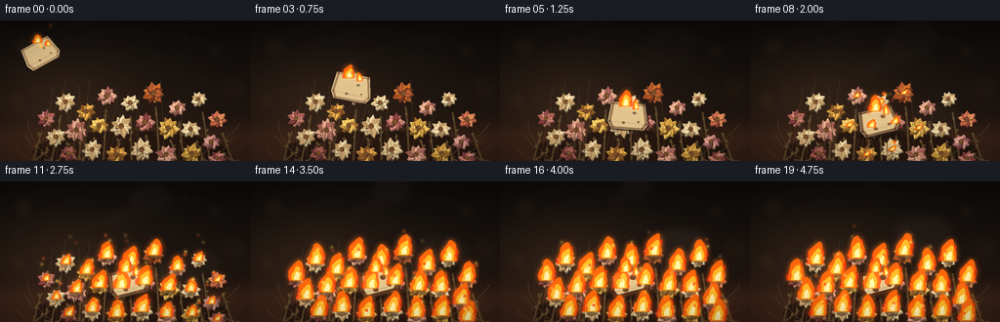
视觉工具实际返回图片 2
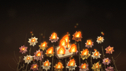
视觉工具实际返回图片 3
视觉工具实际返回图片 4

视觉工具实际返回图片 5
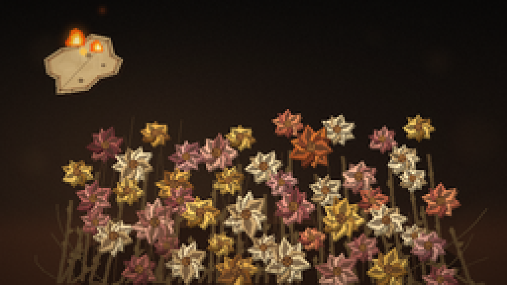
视觉工具实际返回图片 6
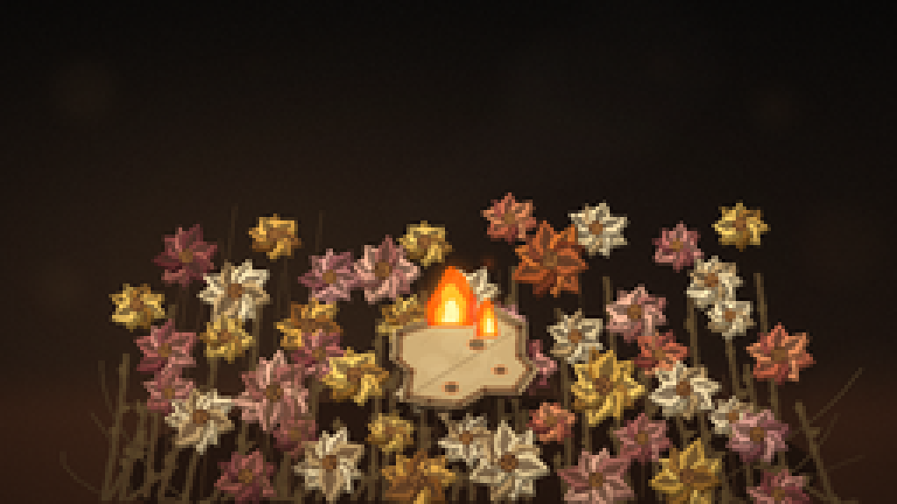
视觉工具实际返回图片 7
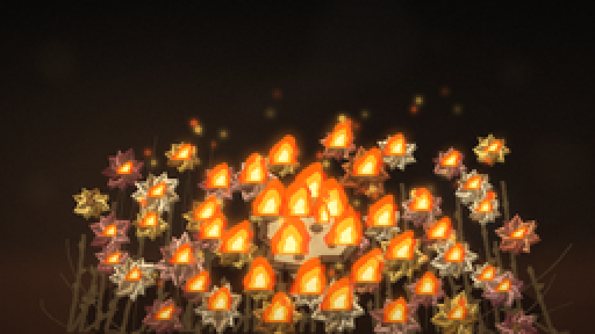
视觉工具实际返回图片 8
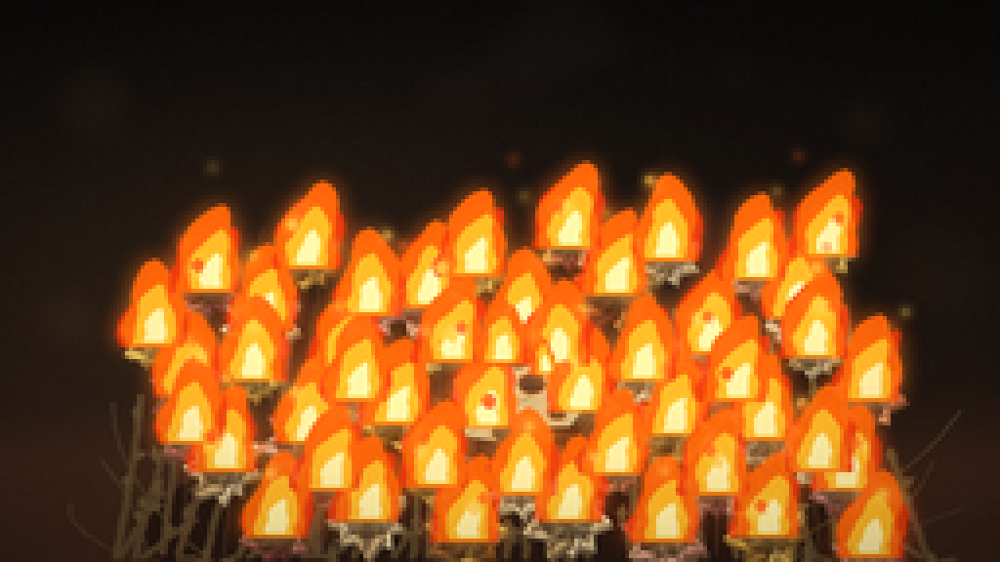
视觉工具实际返回图片 9
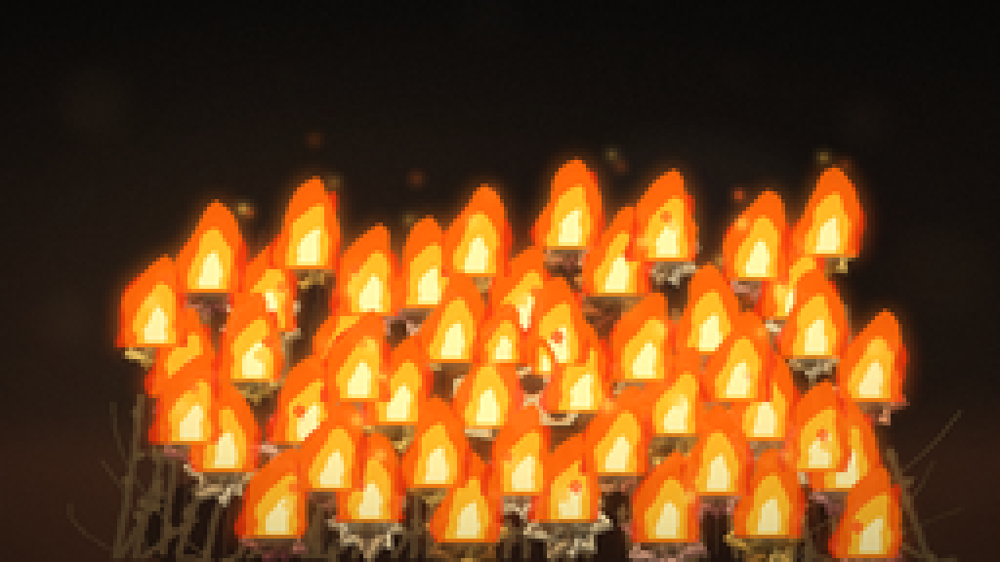
视觉工具实际返回图片 10
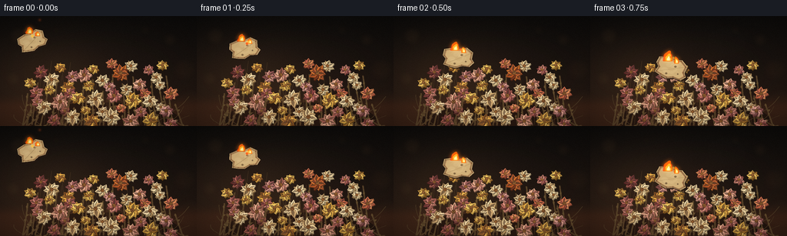
视觉工具实际返回图片 11
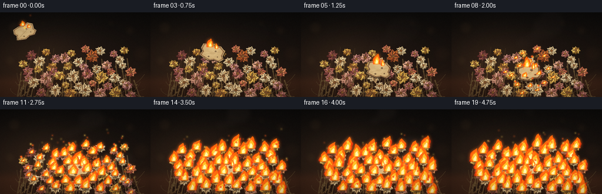
保存候选 3 份；完成命令 17 次；可验证图片返回 11 张。原始 API 响应与完整日志保留在本地。